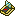

电子陀螺仪
Electronic Gyroscope
英文名: Electronic Gyroscope命名空间 ID:
immersive_aircraft:gyroscope_hud类型: 物品所属模组: Immersive Aircraft资料检索: 🔎 在 MC百科 搜索「电子陀螺仪」所属标签
合成获得 (1)


原始 JSON
{
"type": "minecraft:crafting_shaped",
"pattern": [
"NPN",
"ILI",
"SGV"
],
"key": {
"S": [
{
"item": "minecraft:note_block"
}
],
"G": [
{
"item": "immersive_aircraft:gyroscope"
}
],
"I": [
{
"item": "minecraft:gold_ingot"
}
],
"L": [
{
"item": "minecraft:redstone_lamp"
}
],
"N": [
{
"item": "minecraft:gold_nugget"
}
],
"P": [
{
"item": "minecraft:glass_pane"
}
],
"V": [
{
"item": "minecraft:lever"
}
]
},
"result": {
"id": "immersive_aircraft:gyroscope_hud"
}
}